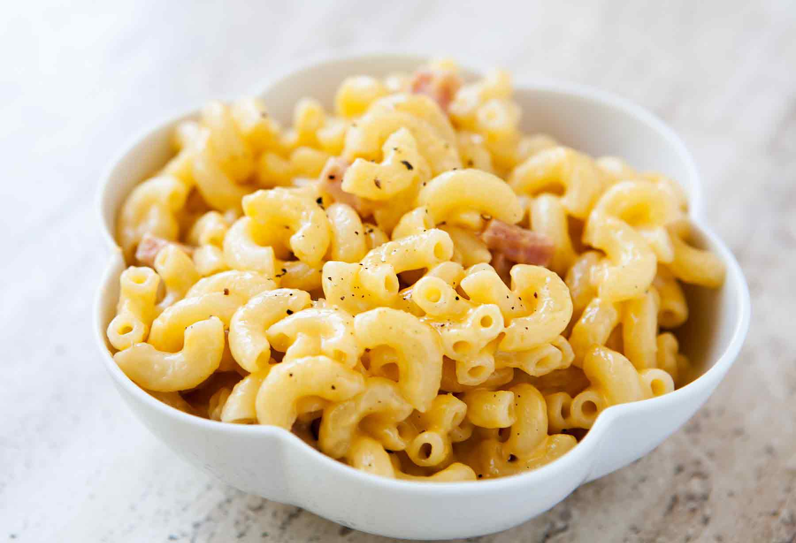

Macaroni

Macaroni is dry pasta shaped like narrow tubes. Made with durum wheat, macaroni is commonly cut in short lengths; curved macaroni may be referred to as elbow macaroni. Some home machines can make macaroni shapes but, like most pasta, macaroni is usually made commercially by large-scale extrusion. The curved shape is created by different speeds of extrusion on opposite sides of the pasta tube as it comes out of the machine.
- 2 cups dried elbow macaroni
- ½ cup chopped green pepper or frozen peas
- 2 tablespoons butter
- ⅓ cup finely chopped onion
- 2 tablespoons all-purpose flour
- ¼ teaspoon salt or to taste
- Cook macaroni according to package directions, adding green pepper or peas during the last 3 minutes of cooking; drain. Cover and keep warm.
- Meanwhile, for sauce, melt butter over medium heat in a large skillet. Cook onion in hot butter for 4 to 5 minutes or until onion is tender. Stir in flour, salt, and black pepper. Add milk all at once. Whisk constantly until thick and bubbly. Cook, whisking constantly, for 2 more minutes. Reduce heat to low.
- Add American & cheddar cheese blend and mozzarella cheese, stirring until sauce is smooth and cheese is melted. Stir the sauce and bison pepperoni into the pasta. Heat through.
Return to Homepage